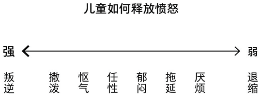

故事的开始，蛤蟆先生抑郁了。他开始酗酒，失眠，变得十分邋遢。于是他的朋友们将他带到了心理医生那里去咨询。与苍鹭先生初次相识，他十分抑郁，给他自己的状态打了两分。但通过一次又一次与苍鹭的讨论，蛤蟆感悟到了自己为什么成为了自己的原因，变得活力满满。不仅如此，他也带领着我一起成长，解了到了我们的不同状态，人生中的不同坐标，增强了对自己的认识。
最初，蛤蟆先生与苍鹭探索了他幼时抑郁的原因。父母给出的无从压力，发泄出口的缺失，以及现在部分朋友对他的态度都令他感到悲伤。此处，苍鹭引入了儿童自我状态 （Child ego state） 的概念（所谓某些人做出的反应与小时候的行动方式，感受相同），又将此分为了自然型儿童和适应型儿童。
自然型儿童拥有着基本的情绪状态，如快乐、深情、愤怒、悲伤、恐惧。而适应型儿童会顺从，依赖，道歉，适应当下的环境，进入自我保护状态。蛤蟆通过访谈发现他很少发脾气。与其说怒气冲冲的将人骂一顿火撒泼打滚，如图，迫于原生家庭的压力，他可能将此转化为郁闷，怄气，使他一直处于一种弱势群体的状态。

咨询中，蛤蟆也提到过他的老朋友，獾。獾打算竞选入校董会，并严厉的要求蛤蟆交上辞职信。对此，蛤蟆十分生气，不仅对獾生气，同时也对他自己的不争气的生气。与苍鹭的谈话中，他发现，獾的表现如同他严厉的父母一样，进入了父母自我状态，十分的挑剔，成为了挑剔性父母，通常会很严厉，愤怒，并且爱挑剔对方。同时，苍鹭也提到了蛤蟆的状态-处于父母自我状态下的他，并不会去批判其他人，但会进行自我批判；这也使苍鹭提到了一个游戏-poor little old me，提出了对于游戏的输赢都取决于玩家的看法，提出了蛤蟆可能在‘共谋’，在暗处导致自己的行为向结果偏向。
最后一个状态，成人自我状态 Adult ego state。苍鹭对蛤蟆说“ 在这个状态下，我们能计划、考虑、决定、行动，我们能理性而合理地行事。处于这个状态时，我们所有的知识和技能都能为自己所用，而不再被脑子里父母过去的声音所驱使，也不会被童年的情绪所围困。相反，我们能思考当下的状况，基于事实来决定要怎么做。” 在大部分人眼中，我相信这个是最佳的状态，但这个状态取决于自己是否能让自己达到这个状态。成长的过程中，我们应该学会为自己的行为负责，与其去买怨别人，不如改变自己。
从中，苍鹭介绍了两件新的事情：人生坐标与心理游戏。人们的观念其实是从幼年就开始形成的，不同的家庭，环境，教育，都会使他们看待事物的视角不同，最终视角的形成也会使人们坚持这种观点与选择，变成自证预言。在四五岁左右，会尝试回答两个问题：‘我是怎么看自己的？我好吗？’，‘我是怎么看别人的？他们好吗？’。 下面的人生坐标图反映了不同的状态。苍鹭举了两个例子：我不好，你好；和我好，你不好。我认为这两种状态反映了蛤蟆和他的父母，一个在不断的打压自己，让自己感到不幸；另一个则在不断的指责对方，让对方愤怒，难堪。

最后一次的谈话中，苍鹭与蛤蟆进行了平等的谈话，反思了前几次面谈。蛤蟆从对苍鹭的依赖变成了对抗依赖，最后变的更加独立。苍鹭也最后提出了一点，在情绪中学习，成长，学会共情，达到最高的境界。 谈话结束后，蛤蟆与朋友们进行了聚会，每个人阐明了自己的计划。虽然要与朋友们告别，但他们在精神上获得了新生，得到了满足，突破了自我。
故事中，唯一令我比较困惑的是为什么蛤蟆在倒数第二次面谈对苍鹭发脾气。他说他受够了苍鹭每次问他的一连串的问题，这使他困惑，迷茫。我可能从未进行过心理咨询，但我实在不能够理解为什么蛤蟆会发脾气。我一直认为心理咨询就是去说出自己的困难，痛苦，然后再反思，思考自己学到了什么，做错了什么，所以我觉得苍鹭做的并没有任何问题。再仔细想想，最后蛤蟆又说了‘你跟我父亲一样’，可能会不会是他把父亲的形象带入进了苍鹭的形象，实现了对父亲反抗，不再受父亲的打压。
看完书后，我觉得我对心理咨询师这个职业更加感兴趣了。我觉得这个职业能够聆听到其他人的故事，并引领他们去更好地认识自我，更够独立反思，学会理解情绪，控制情绪。
部分笔记：
-
我不好，你好（极端：自杀 “这代表了一个人的行为态度，这类人认为自己很差劲，别人都比他好。“ 游戏名字：我真不幸 容易让人抑郁，感到不幸 Poor Little Old Me
-
我好，你不好（极端：谋杀 能让玩家感到愤怒，或者至少能让他们对别人评头论足。处于这个心理坐标的人常常会占据权力和权威的制高点， 看上去好像在这个坐标的人总需要攻击或者谴责别人。 Now I’ve got you, son of bitch